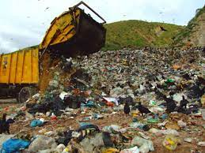

<div class="row">
    <div class="col-xs-6 col-sm-3 col-md-3">
      <div class="team-wrapper-big wow bounceInUp" data-wow-delay="0.2s">
        <div class="team-wrapper-overlay">
          <h5>Descomposición de desechos sólidos</h5>
          <p>La degradación de los desechos varía dependiendo del tipo de residuo, y de las condiciones ambientales. Por ese motivo es importante poder separar los desechos que generamos a diario, para permitir que se degraden de la mejor manera. Y algunos residuos se reciclen y reutilicen.

            </p>
          
        </div>
        
      </div>
    </div>
